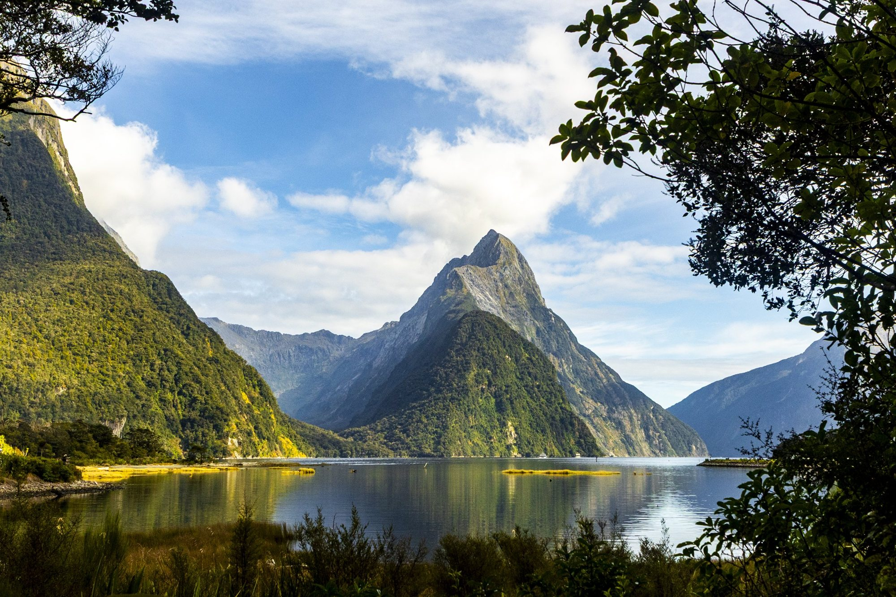
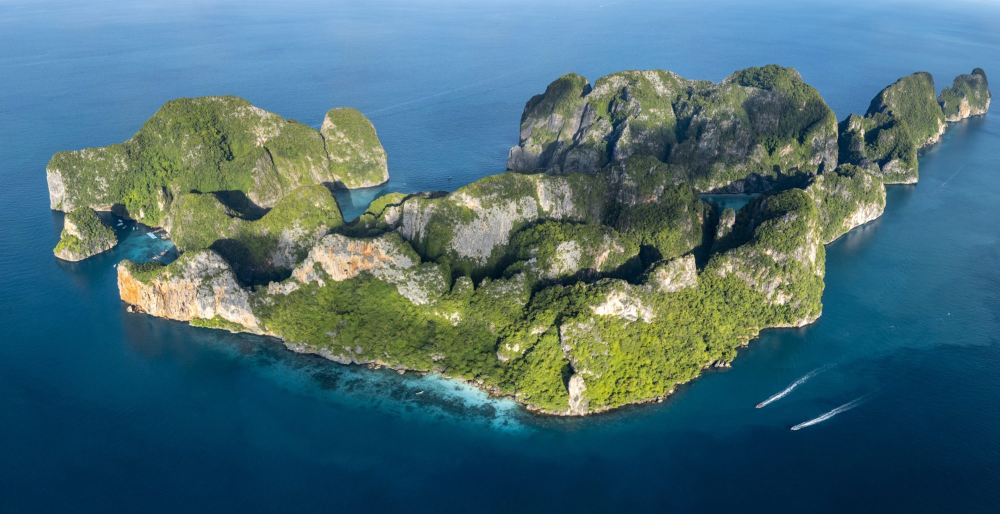
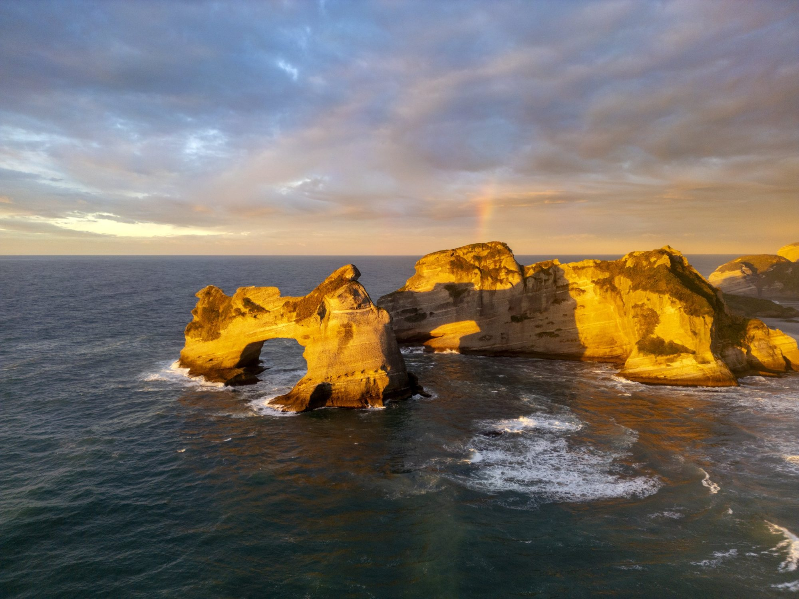
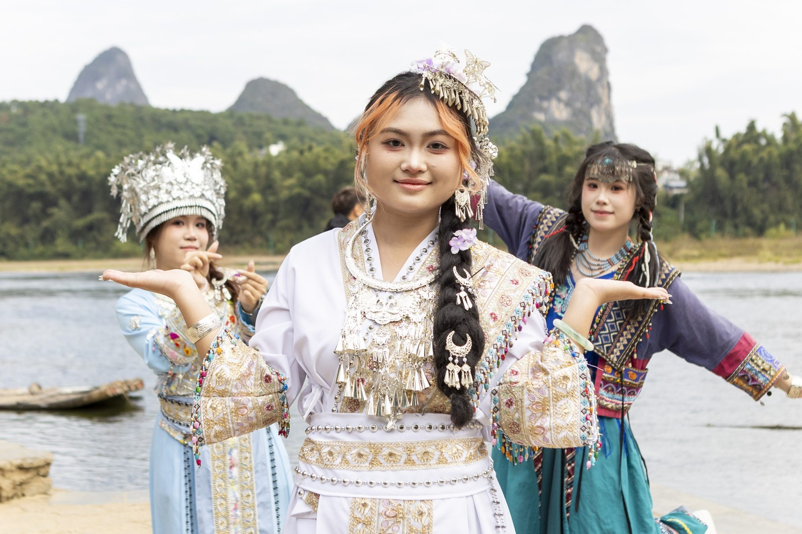
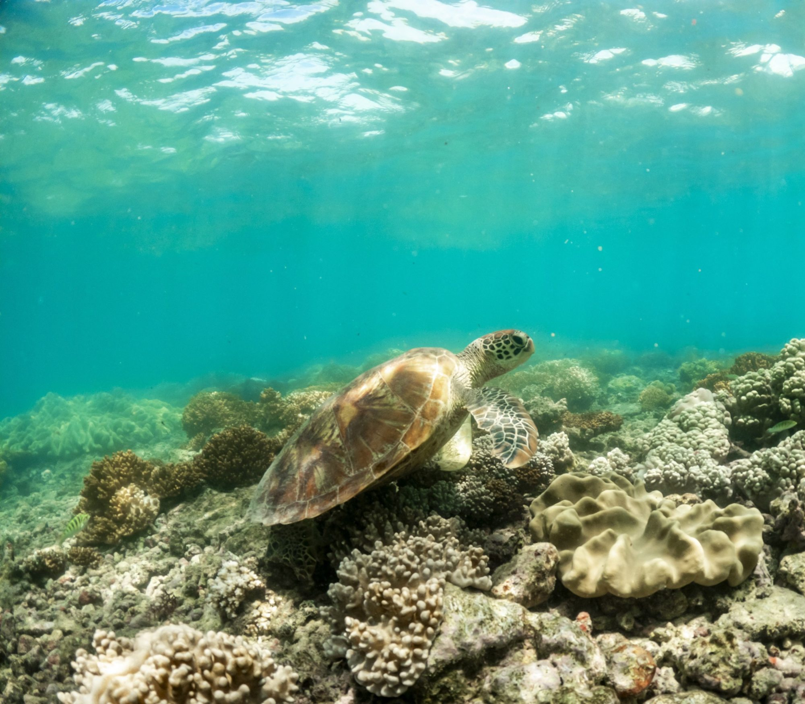
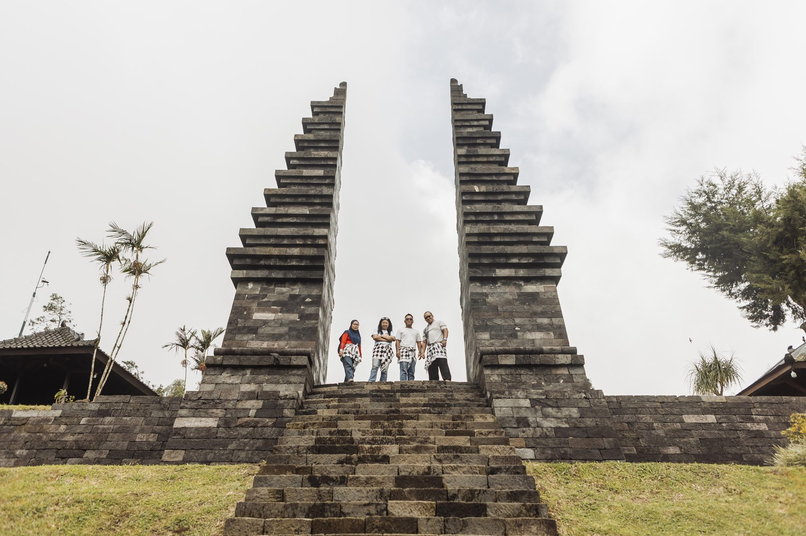
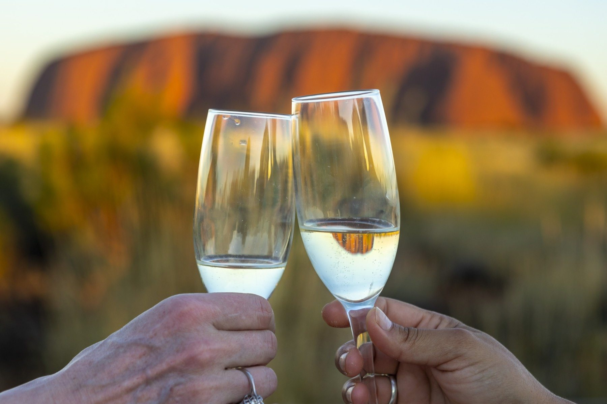
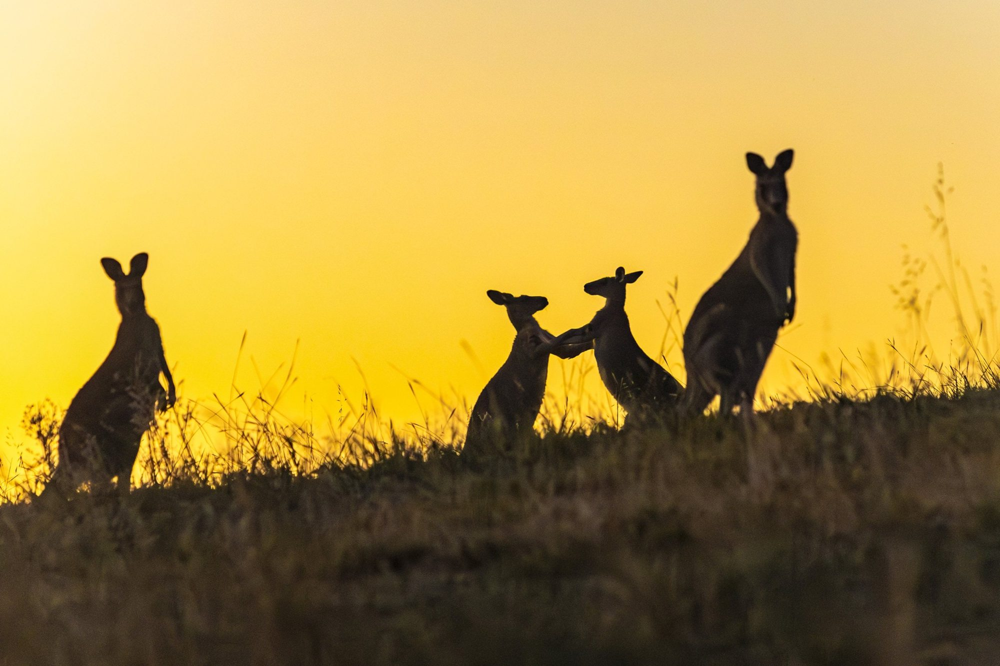
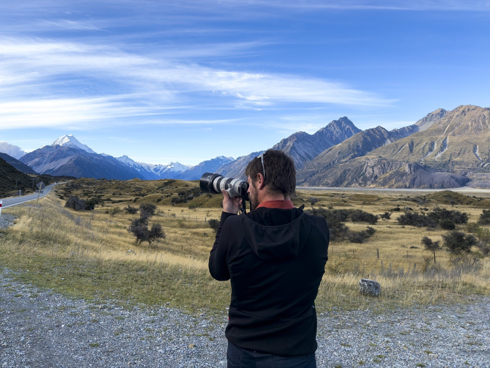

SWAN HELLENIC × JUAN AIZPURU
A world of expeditions.
Stories that bring
them to life.
Original photography and film for the places, people and experiences that make a journey unforgettable.
EXPLORE THE PROPOSAL ↘THE OPPORTUNITY
Bring the whole
experience closer.
From the first glimpse of a distant shore to the people who make a voyage memorable.
Swan Hellenic takes guests beyond familiar routes. I would love to create a visual collection that helps your team share what makes those journeys special — across destinations, ships and experiences.
Working alongside your expedition and marketing teams, I can produce original photography and film for your own campaigns, or develop a complete campaign around your priorities.
DISCOVER WHAT WE COULD CREATE ↗
Images that invite people
to imagine being there.
A COLLABORATION BUILT AROUND YOU
One visual partner.
Many ways to tell the story.
New imagery designed around your destinations, guests and communication needs.
01 Expedition & destination stories +
Landscapes, coastlines, wildlife and excursions — images that communicate the character of a place and the experience of exploring it with your team.
02 People & life on board +
Expedition experts, local guides, hospitality and authentic moments on board and ashore, created with the appropriate permissions and respect for each place.
03 A visual library for your team +
A versatile collection of photography and film for your marketing team and travel partners to use across presentations, editorial, websites and campaigns. Scope, formats and usage agreed together.
04 Campaign creative & production +
From creative concept to production and final material: a tailored campaign built around the story, audience and objectives you want to reach.
SELECTED PORTFOLIO
A way of seeing
the world.
Selected photographs by Juan Aizpuru from previous independent work. They illustrate the visual approach; they are not photographs of Swan Hellenic voyages.






THE WAY WE WORK
Made together.
Created on location.
We start with your priorities: the stories you want to tell, the people you want to reach and the material that would be most useful to your team.
Production can span a voyage, several destinations or an extended assignment. I work with your local and onboard teams to shape a considered, practical plan.
Photography and film can be supplied for your team to use, or developed into a complete campaign. Deliverables, licensing and production arrangements are agreed together.
THE PERSON BEHIND THE CAMERA
Curiosity, experience
and a sense of place.
I’m Juan Aizpuru, a photographer and filmmaker drawn to travel, the outdoors and the people who bring a place to life. Having lived in Switzerland for ten years and travelled widely, I’m comfortable working in varied environments and alongside local teams.
My approach combines striking visual storytelling with an understanding of how images can help a travel brand communicate its experience.
EXPLORE MY WORK ↗
FITUR 2027 / MADRID
Let’s talk about
what we can create.
I’d love to hear what your team is planning and explore how photography and film could support the way you share your expeditions.
VIEW MY PORTFOLIO ↗